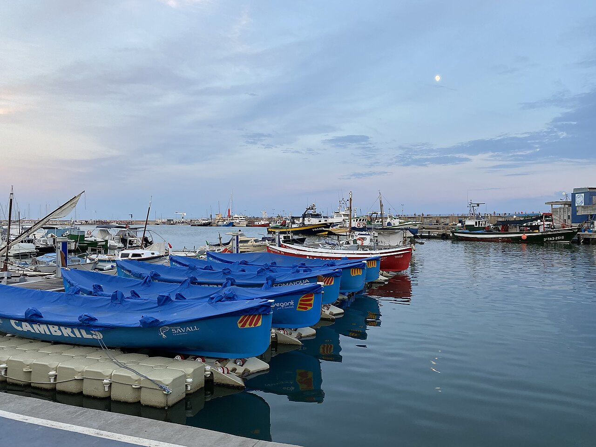
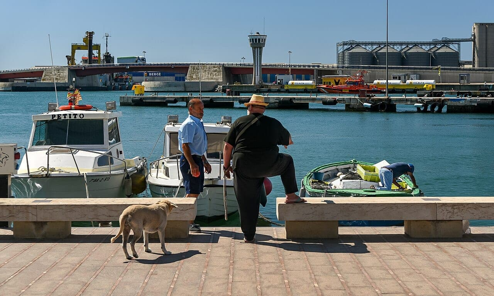

Dónde están las ocho
La guía Michelin 2026 reconoce ocho restaurantes con una estrella en la provincia. Puestos sobre el mapa, el reparto dice más que la lista: dos están en Cambrils, dos en Ulldecona, y el resto se reparte entre Salou, Cornudella de Montsant, Xerta y Alcanar. En la ciudad de Tarragona, ninguna.
Las ocho, una por una · Guía 2026
Can Bosch (Cambrils), con estrella desde 1984, la decana. · Rincón de Diego (Cambrils), de Diego Campos, desde 2005. · Deliranto (Salou), de Pep Moreno, la primera estrella de la historia de Salou. · Quatre Molins (Cornudella de Montsant), del chef Rafel Muria, desde la guía de 2021. · Villa Retiro (Xerta), de Fran López. · Les Moles (Ulldecona), de Jeroni Castell. · L'Antic Molí (Ulldecona), de Vicent Guimerà, que además luce estrella verde por sostenibilidad. · Citrus del Tancat (Alcanar), de Aitor López, que la consiguió en menos de cuatro años desde que abrió.
Deliranto cierra el 31 de octubre y se lleva la estrella a Andorra
La noticia de este mes es una resta. Deliranto, el restaurante de Pep Moreno que dio a Salou su primera estrella Michelin, hace el último servicio en la calle Llevant el 31 de octubre, después de casi diez años. El proyecto reabrirá en el Grand Plaza Hotel & Wellness de Andorra la Vella, con previsión para la segunda mitad de 2027, y Moreno asumirá además la dirección gastronómica del grupo hotelero.
El motivo que ha explicado el cocinero es que se acabó el vínculo con la propiedad del local y tuvo que buscar sitio. Y ahí está el dato que debería hacernos pensar: quiso quedarse en el Camp de Tarragona y no encontró inversor. Una estrella no se va de un territorio por capricho; se va cuando nadie de casa pone el dinero para que se quede.
Lo que dice el mapaDos pueblos de pescadores y una capital sin estrella
Que Cambrils y Ulldecona concentren cuatro de las ocho no es casualidad: son pueblos con cocina propia y de producto, donde la alta cocina creció desde dentro y no desde la recepción de un hotel. Y que las Terres de l'Ebre sumen cuatro —Xerta, Alcanar y las dos de Ulldecona— confirma algo que aquí sabemos: el sur de la provincia cocina muy en serio y se lo cuenta poco.
Y queda la pregunta incómoda: la ciudad de Tarragona no tiene ninguna estrella. Tiene producto —la lonja del Serrallo a diez minutos—, tiene historia y tiene cocineros. Lo que no ha tenido todavía es una casa que convierta todo eso en el tipo de propuesta que la guía reconoce.
Los otros dieciséisLa lista que casi nadie mira
Además de las estrellas, la guía 2026 incluye dieciséis restaurantes recomendados en el territorio. No es un premio de consolación: ese distintivo valora calidad de producto, regularidad en la cocina y propuesta con personalidad. Para quien sale a comer por aquí, esa lista suele dar más alegrías por euro que la otra.
Y nosotros tambiénNuestro recorrido no va a estrellas
Las ocho visitas anuales de la asociación no se eligen por guía, se eligen por criterio propio: por eso en el recorrido hay desde casas de mantel largo hasta cocinas de barrio. Una estrella es una información útil, no un veredicto. Dicho esto, saber dónde están y de quién son ayuda a entender el territorio, y este año ayuda también a entender lo que se nos va.
Fuentes consultadas: Guía Michelin España 2026, Diari de Tarragona, Diari Més, Canal 21 Ebre, La Ciutat, Patronat de Turisme de Salou. Imagen: archivo propio.
Newsletter
¿Quieres recibir la próxima crónica antes que nadie?
Crónicas de los restaurantes visitados, vinos recomendados y novedades del Camp de Tarragona. Cada quince días, sin ruido.
Sin spam · Date de baja cuando quieras.
Más cocina de la provincia

CuriosidadesCambrils · De bar de pescadores a dos estrellas
Cómo un bar junto al puerto abierto en 1969 acabó concentrando dos de las ocho estrellas de la provincia.
Leer →
CuriosidadesEl Serrallo y la subasta de las cuatro
El producto que la capital tiene a diez minutos, y cómo se le pone precio cada tarde.
Leer →